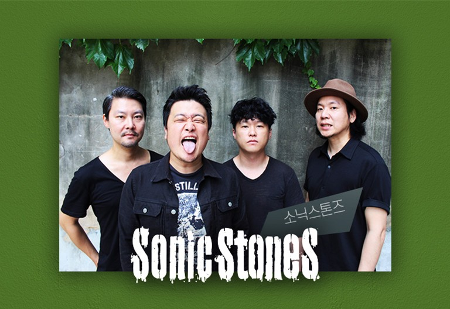

SONIC STONES

lyrics
되돌아 가나요
너무 멀리도 왔네요
이제는 힘든가요
작별인사는 괜찮아
어느새 메마른
낙엽 위를 거닐때면
부서진 마음의 조각이
다시한번 날 찾아요
아프게
이제는 알아요
이제는 끝이라는걸
돌이킬 수 없단걸
돌아갈수도 없단걸
남은건 기억뿐
근데 술로 매일 사라져
힘들었다는 지난날
미소안에 간직해요
그래요
밤 하늘에 거친 비 올때면
보이지 않아도 흐릿한 너에게
한참을 뛰어가
괜찮단 말 한마디라도
아프지 않다는 그 말 한마디면
젖은 낙엽 주워 되돌아가
되돌아 가나요
낙엽 위를 거닐때면
부서진 기억의 조각이
다시한번 날 찾는데
기억이 없어요
삶이란 그런건가요
힘들었다는 지난날
미소안에 간직해요
영원히
밤 하늘에 거친 비 올때면
보이지 않아도 흐릿한 너에게
한참을 뛰어가
괜찮단 말 한마디라도
아프지 않다는 그 말 한마디면
젖은 낙엽 주워 되돌아가